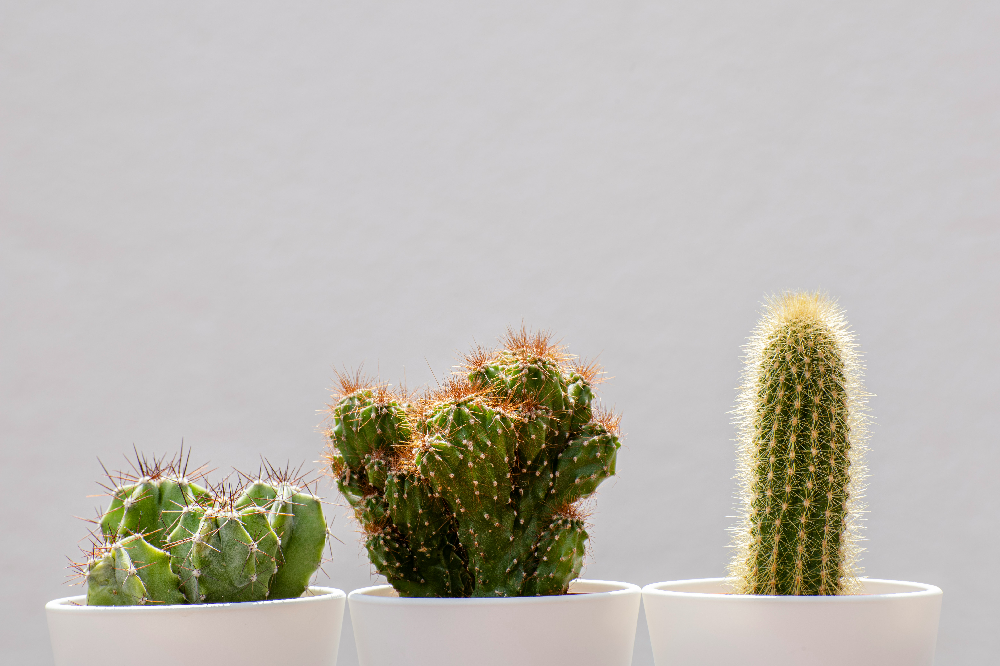

🌵 Conhecendo os cactos!
Os cactos são plantas incríveis! Eles possuem adaptações que ajudam a sobreviver em ambientes onde existe pouca água.

🌵 O que o cacto gosta?
Antes de conhecer melhor essa planta, descubra duas coisas importantes para cuidar dela:
Água
Cactos costumam preferir pouca umidade no solo. Espere o solo secar antes de regar novamente.
Luz
Muitos cactos gostam de bastante luminosidade. A quantidade ideal de sol pode variar de acordo com a espécie.
Importante: pouca água não significa ausência de água! O cacto ainda precisa ser regado quando o solo estiver seco e a planta precisar.
🌵 O que torna um cacto especial?
Os cactos fazem parte de uma família de plantas chamada Cactaceae. Muitos vivem em regiões secas, mas existem espécies que crescem em florestas e outros ambientes.
Guardam água
Muitos cactos armazenam água em seus caules, que podem ficar grossos e carnudos.
Possuem espinhos
Os espinhos são folhas modificadas. Eles ajudam na proteção e, em algumas espécies, reduzem a perda de água.
Absorvem água rapidamente
Muitas espécies têm raízes espalhadas perto da superfície, capazes de aproveitar a água da chuva quando ela aparece.
🔎 Detetive dos cactos!
Toque nos tópicos para descobrir como cada parte ajuda o cacto a viver em seu ambiente.
🌵 Por que os espinhos existem?
Os espinhos são folhas modificadas que ajudam a proteger muitos cactos de animais. Eles também podem ajudar a diminuir a perda de água, dependendo da espécie e do ambiente.
💚 Por que o caule é gordinho?
O caule de muitos cactos armazena água para períodos em que chove pouco. Além disso, o caule verde pode realizar a fotossíntese.
🌸 Cactos também dão flores?
Sim! Muitos cactos produzem flores que podem ter cores e tamanhos diferentes. Depois da polinização, algumas espécies formam frutos com sementes.
🌧️ O que acontece quando chove?
As raízes podem absorver a água disponível, e o caule pode armazenar parte dela. Essa reserva ajuda a planta a enfrentar períodos mais secos.
🌎 Cactos de vários formatos!
Nem todo cacto parece uma coluna com espinhos. Existem espécies com formatos bem diferentes.
Cacto-bola
Tem formato arredondado e pode apresentar costelas e espinhos distribuídos pelo corpo.
Cacto-orelha
O cacto conhecido como orelha-de-coelho possui segmentos achatados que lembram pequenas orelhas.
Cacto-colunar
Cresce principalmente para cima, formando caules compridos que lembram colunas.
🪴 Como cuidar de um cacto?
Cactos costumam precisar de menos regas do que muitas outras plantas, mas isso não significa que nunca precisem de água!
Escolha a iluminação certa
Muitos cactos gostam de bastante luz. A quantidade ideal depende da espécie. Se o cacto mudar de lugar, adapte-o à luz mais intensa gradualmente.
Observe antes de regar
Não regue automaticamente todos os dias, primeiro observe a umidade da raiz.
Evite o excesso de água
Água acumulada nas raízes pode favorecer o apodrecimento.
Manuseie com cuidado
Alguns cactos têm espinhos muito finos e difíceis de retirar da pele. Observe a planta sem tocar nos espinhos.
🧠 E agora, pequeno jardineiro?
Imagine que você tem um cacto em um vasinho. O solo ainda está úmido e o vaso não possui furos para a água sair.
Qual é o principal cuidado que merece sua atenção?
Descobrir a resposta
💡 É importante que o vaso permita a saída do excesso de água. Um solo encharcado pode prejudicar as raízes.
Antes de regar novamente, observe a umidade e as necessidades do seu cacto.
💡 Você sabia?
Nem toda planta cheia de espinhos é um cacto! Existem outras plantas com espinhos que pertencem a famílias diferentes.
E o Meu PlantAmigo?
O Meu PlantAmigo acompanha a umidade do solo para ajudar a identificar quando a planta precisa de água. Para cuidar de um cacto, também é importante considerar as necessidades específicas dessa planta e evitar o excesso de rega.
🌵 Você virou especialista em cactos!
Agora que você descobriu os segredos dessas plantas, teste seus conhecimentos no quiz.
Fazer o quiz